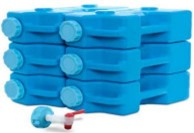
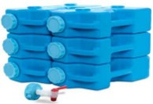

Março 2025
Este mês, nosso foco será em flocos de batata (1 lata #10 por pessoa) e massa (5 libras por pessoa). A massa e os flocos de batata são fáceis de armazenar e têm uma vida útil superior a 30 anos. Ambos não contêm óleos que possam ficar rançosos. Armazene em local fresco e seco, e feche bem. A massa pode ser mantida em sua embalagem original, mas guardá-la em recipientes herméticos ajuda a afastar roedores. Existem vários tipos de massa, e são fáceis de preparar. Molhos de massa também podem ser armazenados para facilitar as refeições. Armazene diferentes tipos para variar as refeições da sua casa.
Os flocos de batata têm múltiplos usos, como engrossar molhos, criar crocância em carnes e vegetais fritos, substituir ligantes em almôndegas ou bolos de carne, deixar pães mais leves, e são um excelente acompanhamento. Também podem servir como base para sopas de batata deliciosas.
Alimentos prontos para o consumo para seu kit de emergência são essenciais. Exemplos incluem jerky de carne, barras de proteína, barras de frutas, manteiga de amendoim individual, frutas secas, e refeições liofilizadas. Escolha alimentos que possam ser preparados e consumidos com pouco esforço e que sejam leves para carregar.
Armazenar água em garrafas plásticas vazias é uma solução prática e econômica. Para garantir a segurança, lave as garrafas com água quente e sabão para remover resíduos. Em seguida, desinfete-as usando uma solução diluída de água sanitária: misture 1 colher de chá de água sanitária (5-6% hipoclorito de sódio) para cada litro de água, encha a garrafa com essa solução e deixe agir por 2 minutos. Enxágue bem com água limpa para remover qualquer resíduo de água sanitária antes de usar. Água armazenada dessa forma pode durar entre 6 a 12 meses se mantida em local fresco, escuro e bem vedado. É importante rotacionar e substituir a água periodicamente para manter sua qualidade.
 

Para o armazenamento de água, recomendamos recipientes móveis que sejam duráveis e fáceis de carregar. O recipiente "Aqua-brick" é resistente, possui alça moldada e suporta 3 galões de água, suficiente para uma pessoa por 3 dias. Os recipientes de 5 galões são empilháveis e permitem armazenar várias semanas de água, mas podem ser pesados para carregar.